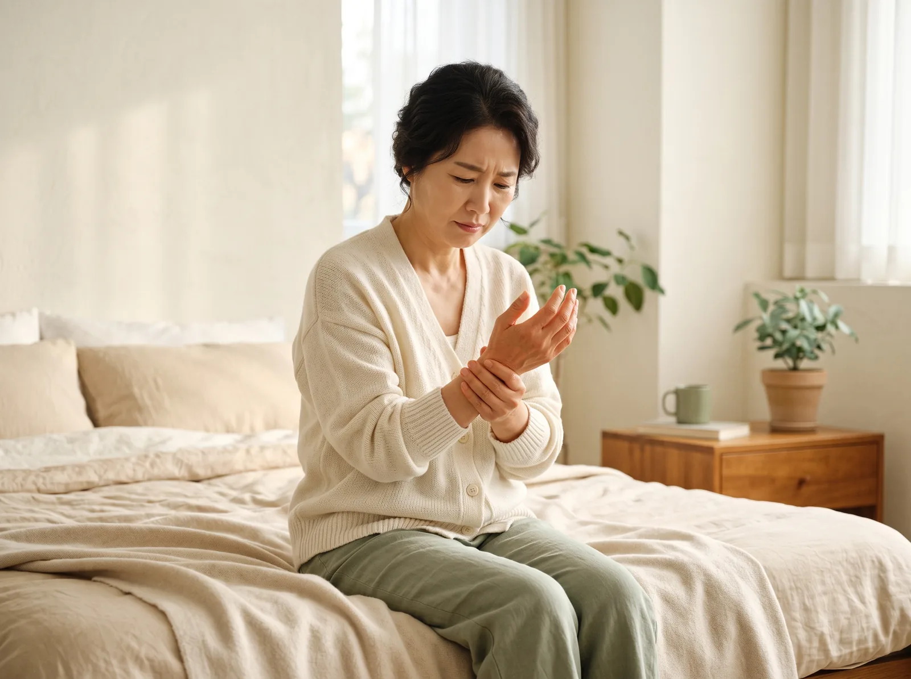
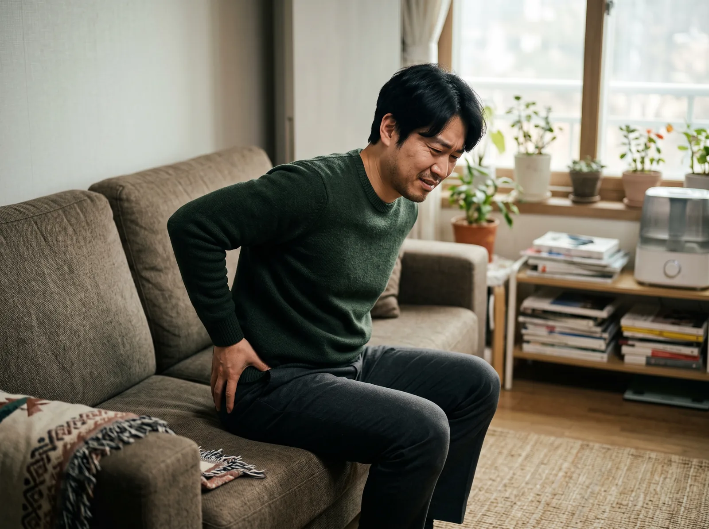
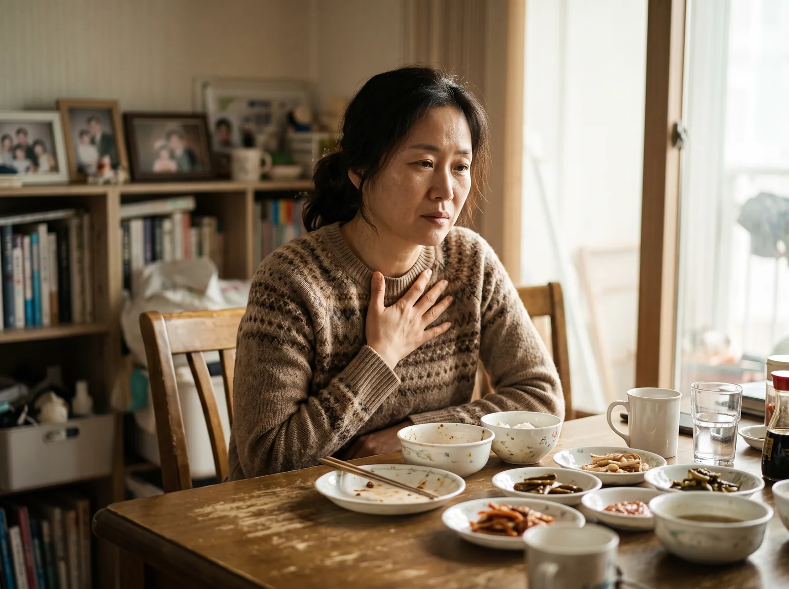

Conditions
질환·증상 건강정보
검색어를 진단명으로 단정하지 않습니다. 생활 속에서 시작되는 장면, 비슷한 증상과의 구분, 진료 전 메모할 것, 지체하지 말아야 하는 신호까지 원장이 직접 검토해 정리했습니다.
근골격·통증
근골격·통증 질환

허리디스크
허리를 숙이거나 오래 앉아 있을 때 통증이 심해지고 엉덩이에서 다리로 저림이 이어진다면 허리디스크(요추 추간판탈출증)의 전형적인 양상과 맞는지 확인이 필요합니다.…
자세히 보기 →목디스크
목 뒤와 어깨가 뻐근하다가 팔이나 손가락까지 저림이 이어진다면 목디스크(경추 추간판탈출증)의 양상과 맞는지 확인이 필요합니다. 특히 고개를 뒤로 젖히거나 한쪽으로…
자세히 보기 →
오십견 · 어깨통증
팔이 잘 안 올라가는 어깨 통증이 모두 오십견은 아닙니다. 능동·수동 가동범위와 야간통·힘 빠짐을 비교해 오십견(유착성 관절낭염)과 회전근개 손상, 목 신경 자극…
자세히 보기 →척추관협착증
걸으면 다리가 저리고 무거워 자주 쉬어야 하는데 앉거나 허리를 숙이면 편해진다면, 척추관협착증의 대표 양상인 신경인성 파행과 맞는지 확인이 필요합니다.…
자세히 보기 →테니스엘보
물건을 들거나 문고리를 돌릴 때 팔꿈치 바깥쪽이 찌릿하게 아프다면 테니스엘보(외측상과염)의 양상과 맞는지 확인이 필요합니다. 급성 염증기와 만성 건 손상기는 치료…
자세히 보기 →
손목터널증후군
밤이나 새벽에 손이 저려 깨고, 손을 털면 조금 나아진다면 손목터널증후군(수근관증후군)의 양상과 맞는지 확인이 필요합니다. 엄지·검지·중지 저림이 중심이라면 손목…
자세히 보기 →
족저근막염
아침에 일어나 첫걸음을 디딜 때 발뒤꿈치가 찌릿하고, 조금 걷다 보면 나아졌다가 오래 서 있으면 다시 아프다면 족저근막염의 전형적인 양상입니다.…
자세히 보기 →
좌골신경통
엉덩이에서 허벅지 뒤, 종아리까지 한 줄로 저리고 당기는 통증이 이어진다면 좌골신경통의 양상입니다. 좌골신경통은 병명이라기보다 증상이어서, 허리디스크·이상근증후군…
자세히 보기 →교통사고 후유증
사고 당시에는 괜찮았는데 며칠 뒤부터 목·허리가 뻣뻣하고 두통·어지럼이 생겼다면 교통사고 후유증입니다. 엑스레이에 이상이 없어도 근육·인대 손상과 어혈은 남아 있…
자세히 보기 →내과·체질
내과·체질 질환

만성두통
진통제를 자주 먹는데도 두통이 반복되고, 뒷목·어깨 뭉침이나 소화 불편, 수면 저하가 함께 있다면 두통의 유형과 원인을 구분해 살펴야 합니다.…
자세히 보기 →
역류성식도염
속쓰림·신물·목 이물감이 반복되고 위산억제제를 끊으면 다시 심해진다면, 위산 자체보다 위장의 운동과 소화 기능, 스트레스·식습관을 함께 살펴야 합니다.…
자세히 보기 →
소화불량 · 만성 위장장애
조금만 먹어도 더부룩하고 자주 체하며, 내시경에서는 이상이 없다는데 소화가 안 된다면 위장의 운동 기능과 체질, 스트레스 반응을 함께 살펴야 합니다.…
자세히 보기 →갱년기 증후군
얼굴이 갑자기 달아오르고 땀이 나며, 잠을 설치고 이유 없이 우울하거나 예민해진다면 갱년기 증후군의 양상입니다. 호르몬 변화에 몸이 적응하는 과정을 체질에 맞춰 …
자세히 보기 →불면증 · 만성피로
잠들기 어렵거나 자주 깨고, 자고 나도 개운하지 않아 낮 동안 피로가 계속된다면 수면 자체뿐 아니라 자율신경과 체질, 소화·통증 등 수면을 방해하는 요인을 함께 …
자세히 보기 →알레르기비염
환절기마다 재채기·콧물·코막힘이 반복되고 항히스타민제를 끊으면 다시 심해진다면, 알레르기 반응을 억누르기보다 코 점막과 호흡기의 면역 상태를 체질에 맞춰 조절하는…
자세히 보기 →